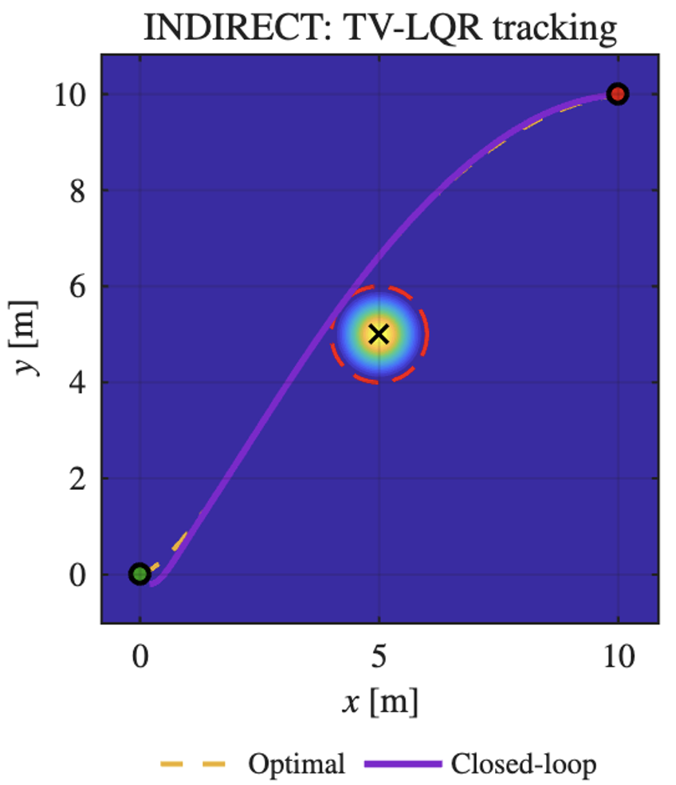

Optimal Obstacle-Avoiding Trajectory Design
This project addressed a nonlinear optimal control problem in which a vehicle had to move from an initial state to a desired final state while avoiding an obstacle and minimizing control effort and running cost. The solution was built using Pontryagin's Minimum Principle, with forward integration of the state, backward integration of the costate, and iterative control updates.
Project Overview
You can expand or edit these sections later with your own report details, figures, results, and explanations.
Goal
The objective was to compute an optimal trajectory for a nonlinear vehicle model in a 2D plane. The vehicle started from a given initial state and had to reach a target state while minimizing a cost function that penalized control effort, velocity-related cost, and proximity to an obstacle.
Main Idea
The solution followed the indirect optimal-control approach. I first solved the state equations forward in time, then solved the adjoint equations backward in time, evaluated the Hamiltonian gradients with respect to the controls, and updated the control profiles iteratively until convergence.
System and Formulation
The dynamics, cost, and obstacle model define the optimal-control problem.
State Variables
- x, y: position in the plane
- v: forward speed
- phi: heading angle
Control Inputs
- u1: thrust input
- u2: yaw-rate input
Vehicle Dynamics
Cost Function and Obstacle
The optimization trades off control effort, motion quality, and obstacle avoidance.
Running Cost
The first two terms penalize control effort, the velocity term penalizes aggressive motion, and the Gaussian obstacle term increases the cost near the obstacle center.
Obstacle Model
The obstacle was represented using a Gaussian barrier centered at (x_c, y_c). This does not impose a hard constraint, but it makes trajectories that pass near the obstacle more expensive.
Terminal Objective
A terminal penalty was added to force the final state to stay close to the desired target. In the implementation, the terminal weighting matrix strongly emphasized the final position coordinates.
Solution Method
The algorithm was implemented as an iterative indirect optimal-control solver.
Iterative Procedure
- Initialize the control inputs over the time horizon.
- Integrate the state dynamics forward from the initial condition.
- Compute the terminal costate from the terminal penalty.
- Integrate the adjoint equations backward in time.
- Evaluate the Hamiltonian gradients with respect to the controls.
- Update the control profiles using gradient descent.
- Repeat until the optimality residual becomes sufficiently small.
What I Implemented
This page can also work like a compact report for the project.
Numerical Elements
- Forward integration with ode45
- Backward costate integration with ode15s
- Interpolation using griddedInterpolant
- Gradient-descent update for the controls
- Trajectory, heading, speed, and control visualizations
Outputs
- Optimal trajectory in the x-y plane
- Speed profile over time
- Heading evolution over time
- Control signals for thrust and yaw rate
- Terminal state error and costate summaries
Possible Additions
You can later expand this page with anything you want.
- Add screenshots of the generated trajectory plots
- Add the Hamiltonian formulation in mathematical notation
- Add the adjoint equations explicitly
- Add convergence plots for the cost function over iterations
- Add a short discussion about why PMP was used instead of direct transcription
- Add a GitHub link or downloadable report